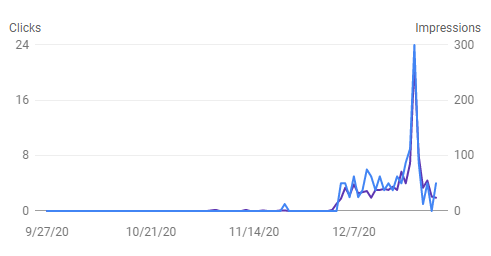

(back)
The following is a Christmas greeting we sent out by email in 1997. This message became a web page shortly afterwards, hosted here, rarely viewed, for decades. In 2020, a rare conjunction of Jupiter and Saturn had people searching for information on the event. Some landed here as can be seen in this page's Google Search diagnostics. The chart's peak is on the 21st of December, the day of the conjunction.

Merry Christmas to all.
For me this started 20+ years ago in the basement of our former church (St. James Lutheran) in Minnesota. Dr. Karlis Kaufmanis from the University of Minnesota Astronomy department gave his famous lecture on the Star of Bethlehem.
Kaufmanis told a fascinating story crafted out of a mix of Biblical and astronomical history. He presented that the description of the star in Matthew agrees well with planetary motions known during the time of Christ's birth. Namely that the star could have been a grouping of planets rising in the eastern sky either in the form of a multiple conjunction (two planets whose paths appear to cross multiple times over a period of months) or a massing of planets (three or more planets tightly grouped together).
The details of this are presented and discussed on a number of web sites. If you explore, it won't take long to find many points of view on this. I like this site prepared by Rev. Phil Greetham.
One thing, along the way, that struck me was that this has been debated since way back (1600's) and the influence of this planetary interpretation even shows up in the old hymn, "O Little Town of Bethlehem" (see second verse).
O little town of Bethlehem,
How still we see thee lie;
Above thy deep and dreamless
sleep
The silent stars go by;
Yet in thy dark streets shineth
The everlasting light.
The hopes
and
fears of all the years
Are met in thee tonight.
For Christ is born of Mary,
And gathered all above,
While mortals sleep the angels
keep
Their watch of wond'ring love.
O morning stars, together
Proclaim the holy birth!
And
praises
sing to God the King,
And peace to men on earth!
If you find yourself getting into this, you may want to make a small investment in an astronomy program for your PC. I have used Cybersky.
These simulations allow you to see with amazing precision the planetary patterns that are discussed at the web sites. You can enter a date (even as far back as Christ's birth) and location (like a city corresponding to ancient Persia), and actually see the conjunctions, massings, and retrograde motions that many think signaled the birth of Jesus to the magi.
Also you may want to try a little forecasting. The program can be used to predict interesting events that you can see in your own backyard with your un-aided eyes (just like the magi did). For example, just a few days ago, on Christmas Eve, there was an interesting grouping of Mars and Venus (it was cloudy here so we didn't get a chance to see this one). Take a look at some of these more common groupings, and you can get a hands-on feel for the ideas presented at the web sites. There is one of interest coming up on New Year's Eve. Although not a tight group, it is a collection of near neighbors. Venus, Mars and Jupiter will all be near the crescent moon as it sets (shortly after sunset). If you draw a line through the tips of the crescent moon, it will go through Mars (always looks a little red) which sits a little closer to the horizon than the moon. This happens near the southwest horizon:
Due to the closeness to the sun, you may have to wait until it gets a little darker (and unfortunately Venus sets) to really see much. Visibility will depend somewhat on how many city lights you're competing against. Anyway, I'd say it's a good reason to step outside shortly after sunset on New Year's Eve.
Whether you think of God's Star as an event leaving a trace in the mechanics of the solar systems or rather a passing sign meant only for the people of that day, I think everyone can agree it is a miraculous story inspired by God Himself. I like to think that God left this permanent mark in the sky as a piece of encouragement to those that would ponder and celebrate Christ's birth in the future.
1st Follow-up message:
Just an update on tomorrow's show. Venus may not be very easy to see. It turns out that it will be crescent and only 8% illuminated. However, Mars and Jupiter will be nearly fully illuminated and very bright. If you're wondering why, Venus is crescent because it's between us and the sun; Mars and Jupiter are full because they are on the other side of the sun.
On the way home tonight I was able to check out the preview. I was too late to try to see all three planets but could very clearly see Jupiter and the crescent moon. Jupiter was so bright I thought it might be a plane landing.
Have fun and Happy New Year!
2nd Follow-up Message:
Happy New Years,
Sorry to hear reports about the clouds in MN. It was a beautiful sight here tonight. It actually turned out that Venus was the brightest of the three planets (followed by Jupiter and then Mars). Hope my last mail message didn't mislead any that tried to see the planets tonight. Venus although it was crescent (illuminated mainly from behind), is the brightest because it is so close (this was news to me tonight, a very amateur astronomer).
Here is a quote from a reference on Venus:
"Except for the sun and the moon, Venus is the brightest object in the sky... When viewed through a telescope, the planet exhibits phases like the moon. Full Venus appears the smallest because it is on the far side of the sun from earth. Maximum brilliance (a stellar magnitude of -4.4, or 15 times the brightest star) is seen in the crescent phase."